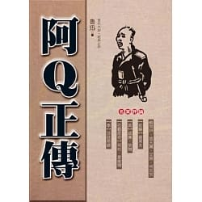

簡介──
這部中篇小說作品，在1921年12月到1922年2月期間，連載於《晨報副刊》之中，是胡適推動白話文運動以來，現代中國小說中最著名的一篇。
魯迅表示，《阿Q正傳》主要是想透過主角阿Q的形象，鞭撻中國半封建半殖民地社會國民靈魂上的弱點，並藉以批評辛亥革命的不徹底性，總結「革命尚未成功」的教訓。
至於小說主角為何叫做「阿Q」?根據魯迅對周作人的說法，是因為「Q」本身有個小尾巴，像是清朝時期，男人腦後蓄留的「辮子」。
心得感想──
我認為《阿Q正傳》不僅是魯迅的著名作品之一、白話文運動的推手，更批判了當代社會、革命的缺失與未完成，儘管個人沒有經歷過那個年代，依舊可以感受到其字裡行間的力量與意志。
